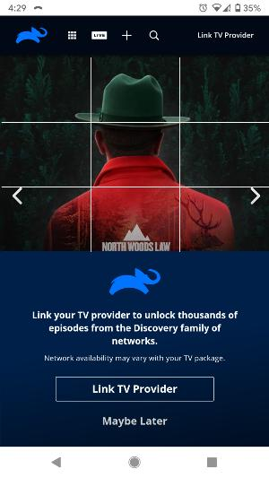

Rule of Thirds
ANIMAL PLANET
As you can see, the grid that I have placed over the image cuts it into nine equal boxes. The aspects of the image that are most important are located close to those lines. The man's head, for example, intersects with the center box on almost every side and his hat and shoulders are also found along the two horizontal lines.
Fitt's Law
CHESS
The easiest button to click on this screen is the big green one. This is not just because it is the most colorful button and catches the eye but also because it is one of the largest areas of this page aside from the title. It also extends to either side of the screen to make not only easier to see but easier to press as well.
Law of Proximity
NETFLIX
We can see two sections of text on the screen rather than just a bunch of lines because there is some distance placed between these areas to imply that they are separate ideas. The text of a section is placed close together so that they are perceived as one related unit.